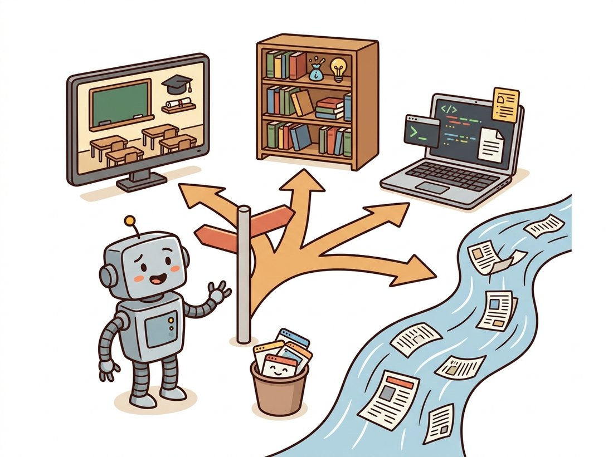

"I have ingested every image processing paper since 1962 and retained mostly the ones with good figures. My advice: one good book, one good course, and the humility to read the documentation before the fourth hour of debugging."
A Bibliographically Overextended Vision Model
You do not need more reading material; you need a map that tells you which of four resource types answers the question you actually have: a course for intuition, a textbook for the math, documentation and reproducible code for implementation, and a filtered feed for what changed this year. This closing section of Part I is that map, annotated with the specific resources that pair best with each chapter you have just read.
The previous section (Section 8.3) equipped you to evaluate methods; this one equips you to keep learning them. Part I compressed sixty years of image processing into eight chapters, and every one of those chapters has a deeper literature behind it. The problem is no longer scarcity but routing: given a question, which shelf do you pull from? Figure 8.4.1 shows the routing logic this section follows.

The same routing logic appears in the friendly form above: one reader, one signpost, and the discipline to take a single lane rather than chasing all four at once.
1. The Bookshelf Beginner
Four books cover Part I's territory, each from a different angle, and Table 8.4.1 maps them onto the chapters you have read so you can jump straight to the right pages.
| Book | Angle | Best paired with | Access |
|---|---|---|---|
| Gonzalez & Woods, Digital Image Processing (4th ed.) | The standard reference: thorough, formal, exhaustive exercises | All of Ch 1 to Ch 7; its frequency and restoration chapters go deepest | Companion site |
| Szeliski, Computer Vision: Algorithms and Applications (2nd ed.) | Encyclopedic and research-oriented; bridges into Parts II and III | Ch 1 (formation), Ch 3-Ch 5 (its Chapter 3) | Free online |
| Burger & Burge, Digital Image Processing: An Algorithmic Introduction (3rd ed.) | Algorithm-first: every method as careful pseudocode | Ch 2, Ch 6; ideal when reimplementing | imagingbook.com |
| Smith, The Scientist and Engineer's Guide to DSP | Signal processing intuition with almost no prerequisites | Ch 4; the gentlest serious treatment of the DFT in print | Free online |
For video, three free courses stand out. Shree Nayar's First Principles of Computer Vision (Columbia) is the best visual-intuition companion to Part I in existence: short, beautifully produced lectures on image formation, sensing, and filtering that align almost one-to-one with Chapter 1 through Chapter 4. CMU's 16-385 Computer Vision posts complete slide decks that condense each Part I topic to its load-bearing equations, and the University of Central Florida's CRCV lecture series on YouTube covers the classical pipeline at a comfortable graduate-intro pace.
2. The Classic Papers, Chapter by Chapter Intermediate
Reading the original papers behind Part I is more rewarding than it sounds: the classics are short, concrete, and often clearer than their textbook summaries. Table 8.4.2 lists the primary sources for the algorithms this part used most, with the chapter where each appeared.
| Paper | Year | Gave us | In this book |
|---|---|---|---|
| Otsu, "A Threshold Selection Method from Gray-Level Histograms" | 1979 | Automatic global thresholding | Chapter 2 |
| Burt & Adelson, "The Laplacian Pyramid as a Compact Image Code" | 1983 | Image pyramids and multi-scale analysis | Chapter 4 |
| Perona & Malik, "Scale-Space and Edge Detection Using Anisotropic Diffusion" | 1990 | Edge-preserving diffusion | Chapter 7 |
| Tomasi & Manduchi, "Bilateral Filtering for Gray and Color Images" | 1998 | The bilateral filter | Chapter 7 |
| Wang et al., "Image Quality Assessment: From Error Visibility to Structural Similarity" | 2004 | SSIM | Chapter 1, Section 8.3 |
| Buades, Coll & Morel, "Non-Local Means Denoising" (IPOL edition) | 2005 / 2011 | Non-local self-similarity denoising | Chapter 7 |
| Dabov et al., "BM3D Image Denoising" (IPOL edition) | 2007 / 2012 | The classical denoising ceiling | Chapter 7 |
| Canny, "A Computational Approach to Edge Detection" | 1986 | The edge detector Part II opens with | Chapter 9 |
Two of those rows deserve a special note: the IPOL editions. The Image Processing On Line journal publishes algorithms with reviewed reference implementations and a browser demo; every claim is reproducible by construction. When you need to understand exactly what a classical algorithm does, including the details the original paper left out, IPOL is frequently the best version of the paper.
The fastest route from "which paper?" to "which equation?" is often the library itself. scikit-image docstrings cite the primary sources they implement, which means help(restoration.denoise_nl_means) is a curated reference list, and reading the 50-line implementation underneath it is often quicker than decoding the paper's notation. The same habit works in reverse: when a function's behavior surprises you, the cited paper usually explains the design decision that the docstring compressed into one sentence. Code 8.4.1 makes the habit concrete.
# Mine a docstring's bibliography: pull the References section out of
# a scikit-image function's documentation, turning the library itself
# into a curated citation trail for the algorithm it implements.
from skimage import restoration
doc = restoration.denoise_nl_means.__doc__
refs = doc.split("References")[1] # numpydoc sections are plain text
print(refs[:290])
----------
.. [1] A. Buades, B. Coll, & J-M. Morel. A non-local algorithm for image
denoising. In CVPR 2005, Vol. 2, pp. 60-65, IEEE.
https://doi.org/10.1109/CVPR.2005.38
.. [2] J. Darbon, A. Cunha, T.F. Chan, S. Osher, and G.J. Jensen,
Fast nonlocal filtering ...
Who: A backend engineer newly assigned to a document-scanning product's image quality team.
Situation: First task: improve the binarization of phone-photographed receipts, a problem mixing illumination correction, thresholding, and morphology.
Problem: A week of searching produced thirty browser tabs of blog posts with contradictory advice, three Medium articles that silently assumed scanned (not photographed) input, and no working baseline.
Decision: Her tech lead prescribed the routing map: one course module for intuition (Nayar's lectures on image formation), one textbook chapter for the math (Gonzalez & Woods on thresholding), one reproducible implementation as the baseline (scikit-image's Sauvola thresholding, docstring citation followed back to the 2000 paper), and zero further tabs until those three were digested.
Result: A working, literature-grounded baseline in four days, and a vocabulary for reading the newer papers that eventually replaced it.
Lesson: Depth beats breadth during ramp-up. One primary source plus one runnable implementation outperforms any number of secondhand summaries.
3. Staying Current Without Drowning Intermediate
The research firehose is real: arXiv's computer vision category receives on the order of a hundred submissions every weekday, and image processing work is split across cs.CV and eess.IV. If you can deeply read two papers a week, you are sampling well under one percent of the flow, so the design goal of a reading workflow is the filter, not the feed. A workable funnel has three stages: a broad skim source (arXiv listings or the community-curated Hugging Face Daily Papers), a relevance filter (does it touch your task, with code?), and a depth queue you actually empty. Papers with Code short-circuits much of the work by attaching leaderboards to the benchmarks of Section 8.3, and the CVF Open Access archive provides every CVPR, ICCV, and WACV paper free. Code 8.4.2 automates the first stage of the funnel.
# Skim-stage watcher for the reading funnel: query arXiv for the most
# recent papers on a topic and print only their titles and dates, so
# the reading decision stays separate from the reading itself.
import arxiv # pip install arxiv
client = arxiv.Client()
search = arxiv.Search(
query='cat:eess.IV AND abs:"image restoration"',
max_results=5,
sort_by=arxiv.SortCriterion.SubmittedDate)
for r in client.results(search):
print(r.published.date(), "|", r.title[:70])
2026-06-08 | Frequency-Aware Degradation Modeling for Blind Image Restoration 2026-06-05 | A Unified Prior for Joint Denoising and Super-Resolution ... 2026-06-04 | Benchmarking Perceptual Metrics Under Real Sensor Noise ...
A from-scratch arXiv watcher (HTTP requests against the export API, Atom XML parsing, pagination, rate-limit etiquette, retry logic) runs about 40 lines before it is robust. The arxiv package in Code 8.4.2 reduces it to 5: the library handles the API's paging and politeness delays, parses entries into typed objects with authors, abstracts, and PDF links, and survives the API's intermittent quirks. 40 lines to 5, and the 5 lines are the ones that state your query.
At roughly a hundred computer vision submissions per weekday, arXiv now publishes more image-related papers in a single month than the entire field produced in its first decade. The good news hidden in that flood: nobody reads them all, your competitors included. The skill that separates the productive researcher from the perpetually behind one is not reading faster, it is the willingness to close ninety-nine tabs unread and finish the hundredth. A reading list is a queue, not a debt.
The reading workflow itself became a research topic. Semantic Scholar's TLDR summaries compress papers to one generated sentence at search time, and Allen AI's OpenScholar (2024) answers literature questions with retrieval-augmented citations drawn from 45 million open-access papers. alphaXiv (2024) attached a public discussion layer directly to arXiv preprints, so the first reproduction reports now often appear next to the paper itself, and Hugging Face Daily Papers turned community upvoting into a daily filter that many practitioners treat as their primary feed. Used well, these tools accelerate the skim and filter stages of the funnel; the depth stage, actually reading the winning papers, remains stubbornly manual, which is exactly why the curation habits of this section still matter in 2026.
A final calibration: classical image processing is a slow-moving field by deep learning standards, which is good news for your reading budget. The bilateral filter is decades old and still ships in every camera; the metrics of Section 8.3 change on a timescale of years, not weeks. Spend your currency budget where the field actually moves fast, which from Part III onward it does, and let Part I's foundations compound quietly. That closes the toolbox, and Part I with it: Chapter 9 begins asking what the images contain.
Using Figure 8.4.1, name the single best first resource (specific book chapter, course module, documentation page, or feed) for each question, and say why the other three lanes are worse starting points: (a) "Why does my resampled image shimmer?" (b) "What is the exact derivation of the Wiener filter?" (c) "I need a working Sauvola threshold by Friday." (d) "Has anyone beaten BM3D on real sensor noise lately?"
Extend Code 8.4.2 into a weekly digest tool: track two queries of your choice, deduplicate against previously seen arXiv IDs stored in a local JSON file, filter titles against a keyword blocklist, and emit a Markdown digest with title, one-line abstract excerpt, and PDF link. Bonus: add a flag that keeps only papers whose abstracts mention a public benchmark from Section 8.3.
Pick one algorithm from Chapter 7 and trace it through three layers: the scikit-image docstring references (Code 8.4.1), the original paper, and the IPOL edition where one exists. Document three concrete discrepancies between what the original paper specifies and what the library implements (parameter defaults, normalization choices, border handling), and assess whether each discrepancy could change a published comparison, connecting your conclusion to the protocol lessons of Section 8.3.